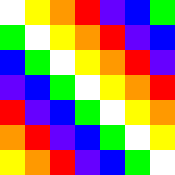

Bienestar, naturaleza y energía ancestral
Laguna volcánica con aguas termales y energía ancestral.
Baños termales, yoga, senderismo y observación de estrellas.
Paquete completo con transporte, alojamiento y experiencias.